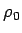
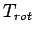

: 残差循環
: NumRu::GPhys::EP_Flux で計算される緒量
: 系の設定
目次
本モジュールでは惑星半径と後述の で規格化した EP フラックス
(以降, 規格化した EP フラックス)を計算, 出力する.
規格化した EP フラックスは
と定義される.
ここで
,
はそれぞれ
規格化された EP フラックスの  成分,
成分,  成分である.
は東西オイラー平均量,
は東西オイラー平均量からのずれを表す.
はそれぞれ東西風速, 南北風速, 対数圧力速度で
成分である.
は東西オイラー平均量,
は東西オイラー平均量からのずれを表す.
はそれぞれ東西風速, 南北風速, 対数圧力速度で
と定義される.
は温位, は惑星半径(定数)である.
は
である.
ただし,  は基本場の密度で
である.
 はコリオリパラメータで
はコリオリパラメータで
と定義される.
は自転角速度, は自転周期である.
本モジュールでは, 自転角速度を変更するためには
の値を与える仕様になっている.
一方, Andrews et al. (1987) で示されている
EP フラックスは次のように定義される
ここで , はそれぞれ EP フラックスの成分, 成分である.
と
は以下のように関係付けられる.
, はそれぞれ EP フラックスの成分, 成分である.
と
は以下のように関係付けられる.
: 残差循環
: NumRu::GPhys::EP_Flux で計算される緒量
: 系の設定
目次
Tsukahara Daisuke
平成17年2月19日